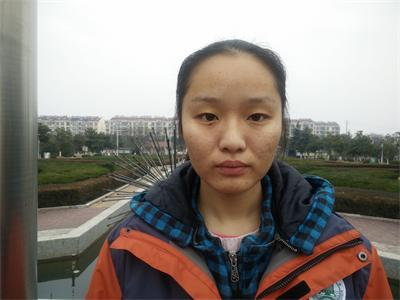

|
各位尊敬的老师、亲爱的同学们，我今天国旗下讲话的题目是《多一点勇气，战胜严寒》。 不知不觉又一个冬天来到了，尽管南京的气候时常让我们摸不着头脑，得做好随时加减衣物的准备，但最近我们也可以明显的感受到寒冷的气息。有人说，冬天是个脱衣服需要勇气，起床需要爆发力的季节，的确是这样，寒冷是人类特别惧怕的一样东西，畏寒也是人类的本能，似乎到了冬天我们的任何行为都会变得迟缓些，我们总是被一层又一层的衣物包裹住，就像现在，我看不到你们纤长的手指，取而代之的是粗粗的袖笼，我看不到你们颀长的脖颈，取而代之的是厚实的围巾。每天早上总想再多睡5分钟；课堂上总希望我们的眼睛能代替口袋里的手帮我们多记些知识点；体活课的时候，总希望静止不动成为最好的运动，似乎我们更想进入一个冬眠状态。 美国科学杂志曾发表过一篇关于冬眠的文章，文章中研究和介绍了黑熊的冬眠过程，结果发现，黑熊在最长超过半年的冬眠过程中，体温保持得极好，而且骨骼中的钙质没有流失，肌肉也没有萎缩，甚至有受孕的母熊在期间怀上了小熊。这是自然界一个重大发现，但就我们人类呢，大家应该都清楚，我们做不到。让我们存活下去的方法其实恰好相反，我们需要动起来。 而让我们不想动的原因是什么呢？米兰·昆德拉说过：我们常常痛感生活的艰辛与沉重，无数次目睹了生命在各种重压下的扭曲和变形，平凡，一时成了人们最真切的渴望。但是，我们在不经意间遗漏了另外一种恐惧———没有期待，无需付出的平静，其实是在消耗生命的活力与精神。当我们因为起床那2分钟的严寒而迟疑时，其实新一天的希望和朝阳已经在等着我们；当体活课你想在教室多呆一会的时候，其实操场上的同学们已经high起来，暖和起来。对生活和学习有了期盼和希望，我们才会有勇气去改变，一时的畅快只能换来长久的痛苦。心理学流派中有一个萨提亚流派，它其中提到在面对压力时，多半人会倾向于选择他们所熟悉的而非舒适的应对方式，也就是说要想做出改变其实挺难，因为改变可能意味着痛苦、未知，但同时它也提到任何改变都是有可能的，只要我们有足够的勇气和决心。当你们觉得因冬天的寒冷而想退缩时，你们其实已经无数次战胜过自己，因为你们最终还是顶着寒风准时坐在教室里，所以现在你们需要的是再多一点勇气，做出更多的改变。除了心态上的改变，我们也可以从一些小行动开始，比如： 首先，从心理上就不要畏惧它，给自己一些积极的心理暗示，告诉自己其实没我想的那么冷。 2、一定要吃些热乎的早饭，这比你在床上多躺5分钟更会给你的一天带来活力！ 3、多喝热水，这不仅给你在干燥的冬天多些滋润，也能为你的身体送去热量。 4、不要以为不动就不冷，适当的运动会更有助于你的身体制造热能，保持体温。比如课间的时候站起来跺跺脚、搓搓手，走动走动。 5、尽量少喝些冷饮，冬天人体温度本来就低，会更加受不了这些食物的刺激，也会影响肠胃。 最后，希望大家从克服严寒开始，发现自己身上更多的改变，让寒冬变成暖冬，迎接春天的到来！谢谢大家！
何凡 2015.12.28
何凡，来自南京市六合区，2015年毕业于南京晓庄学院应用心理学系本科，今年8月刚刚入职，目前已获得三级国家心理咨询师证、中级萨提亚治疗师证。
徐溧祁：现担任副班长一职，他学习勤奋刻苦，成绩优异，做事认真负责。他总是每天早上最早到班，晚上最晚离开班级。他为人随和，与同学相处融洽，擅长书法，能写一手漂亮的字。他的人生格言是：从最小的事情中，也能看出一个人的伟大。 
章雨婷：现担任语文课代表一职，无论是生活上的责任心，还是学习中的恒心，她都用心去刻写它们的一笔一画。风雨中夹着黎明，她用灵魂包裹着坚强。她的人生格言是：比我好的人还在努力，比我差的人还没放弃，我有什么理由说自己无能为力。
|
多一点勇气，战胜严寒
文章来源：admin 点击数：573 时间：2015-12-30 20:33:35